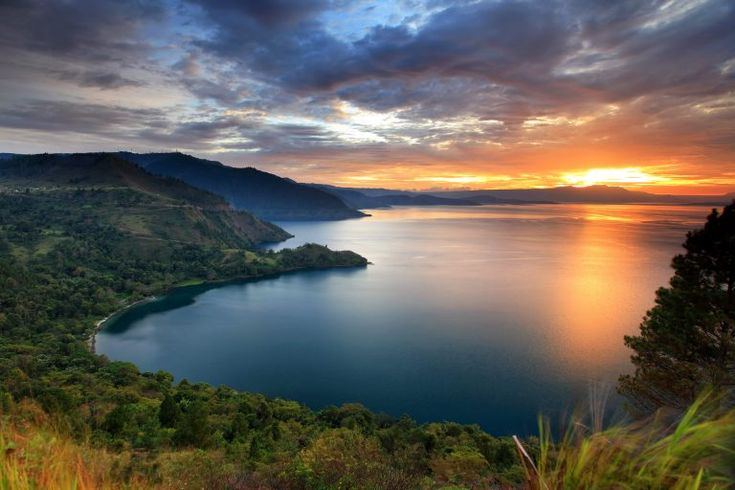
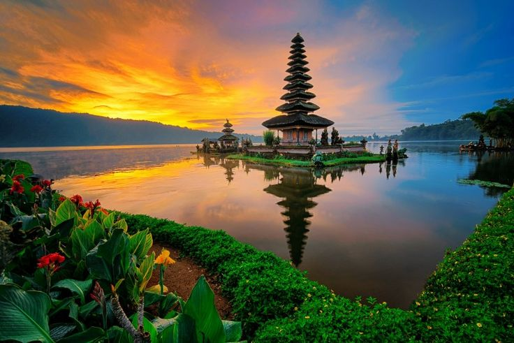
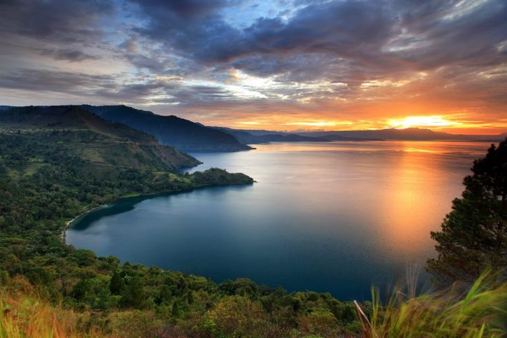
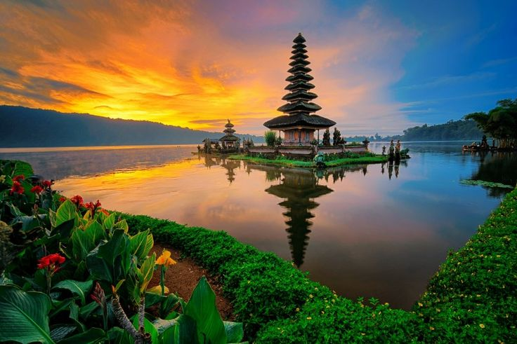
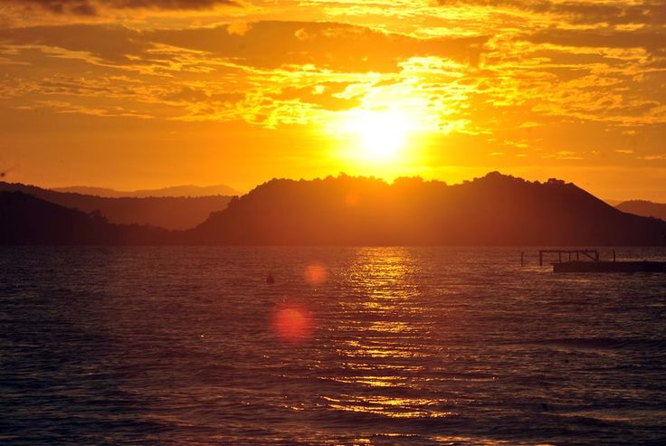
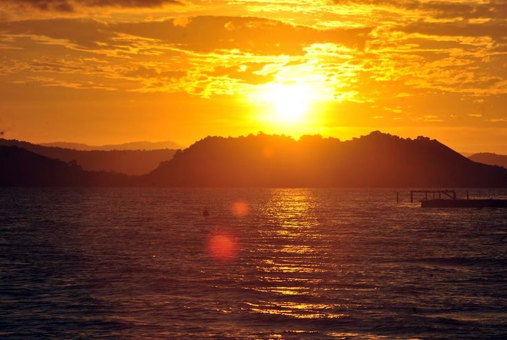

BERIBU PULAU
Indonesia merupakan negara terluas ke-14 sekaligus negara kepulauan terbesar di dunia dengan luas wilayah sebesar 1.904.569 km²,[13] serta negara dengan pulau terbanyak ke-6 di dunia, dengan jumlah 17.504 pulau.[14] Nama alternatif yang dipakai untuk kepulauan Indonesia disebut Nusantara.[15] Selain itu, Indonesia juga menjadi negara berpenduduk terbanyak ke-4 di dunia dengan penduduk mencapai 277.749.853 jiwa pada tahun 2022
Telusuri 




 
